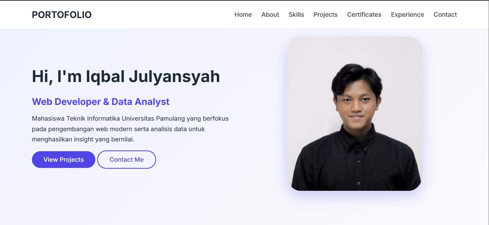

Hi, I'm Iqbal Julyansyah
Web Developer & Data Analyst
Mahasiswa Teknik Informatika Universitas Pamulang yang berfokus pada pengembangan web modern serta analisis data untuk menghasilkan insight yang bernilai.
Mahasiswa Teknik Informatika Universitas Pamulang yang berfokus pada pengembangan web modern serta analisis data untuk menghasilkan insight yang bernilai.
Saya adalah mahasiswa aktif tahun kedua Program Studi Teknik Informatika Universitas Pamulang dengan minat kuat pada bidang Web Development dan Data Analysis. Saya terbiasa mengembangkan website dengan pendekatan yang terstruktur, responsif, serta mudah dikembangkan kembali, sekaligus mengolah data mentah menjadi informasi yang bernilai dan mudah dipahami.
Dalam perjalanan akademik dan non-akademik, saya aktif terlibat dalam berbagai organisasi, kepanitiaan, serta program pengembangan diri. Pengalaman tersebut membentuk kemampuan saya dalam komunikasi, manajemen waktu, kerja tim, serta pemecahan masalah secara sistematis. Saya memiliki ketertarikan besar pada pemanfaatan teknologi untuk mendukung efisiensi kerja dan pengambilan keputusan berbasis data.
Saya terbiasa berpikir kritis, adaptif terhadap teknologi baru, dan memiliki semangat belajar yang tinggi untuk terus meningkatkan kompetensi teknis maupun non-teknis sebagai bekal berkarier di dunia profesional.
Berpengalaman dalam membangun website statis hingga dinamis dengan struktur kode yang rapi dan mudah dikembangkan.
Mampu mengolah, menganalisis, dan memvisualisasikan data untuk menghasilkan insight yang jelas dan mudah dipahami.
Berikut beberapa project yang pernah saya kerjakan. Setiap project dapat dikembangkan dan ditambahkan kembali sesuai kebutuhan di masa mendatang.

Sistem Informasi Apotek berbasis web yang mengelola data obat, kategori, stok, dan transaksi penjualan. Dilengkapi fitur pencatatan otomatis, monitoring stok, serta laporan periodik untuk meningkatkan akurasi data dan efisiensi proses administrasi apotek.

KantinGO! merupakan platform rekomendasi makanan dan minuman berbasis web yang menyajikan informasi kantin, menu, harga, serta menu favorit berdasarkan tingkat pembelian. Sistem ini membantu mahasiswa Universitas Pamulang memilih kuliner sesuai selera dan budget secara efisien.

Website portofolio pribadi yang dirancang untuk menampilkan profil, keahlian, project, serta pengalaman secara profesional dan terstruktur. Website ini menjadi media personal branding yang merepresentasikan kompetensi, minat, dan perjalanan pengembangan diri di bidang teknologi informasi.
Bertanggung jawab dalam pengelolaan dan validasi database beasiswa mahasiswa, memastikan kelengkapan dan akurasi data hingga 100%. Saya juga berperan dalam analisis data penerima bantuan untuk mendukung proses pelaporan dan pengambilan keputusan, serta mendukung kebutuhan desain grafis untuk publikasi internal lembaga. Kontribusi ini membantu meningkatkan efisiensi proses administrasi dan mempercepat alur verifikasi data beasiswa secara signifikan.
Memimpin dan mengoordinasikan kegiatan pengembangan web di lingkungan klub, mulai dari perencanaan materi, pembagian tugas, hingga evaluasi hasil project. Saya membimbing anggota dalam memahami dasar hingga implementasi web development melalui proyek nyata. Peran ini melatih kemampuan kepemimpinan, komunikasi teknis, serta manajemen proyek dalam tim yang kolaboratif.
Mengikuti program bootcamp pengembangan diri yang diselenggarakan oleh Paragon Corp dengan fokus pada penguatan soft skill, komunikasi profesional, dan kepemimpinan. Program ini melibatkan berbagai aktivitas kolaboratif, studi kasus, serta pelatihan intensif. Terpilih sebagai koordinator kegiatan Offline Activity perdana di wilayah yang ditunjuk, bertanggung jawab atas perencanaan, koordinasi tim, serta pelaksanaan acara hingga berjalan dengan lancar dan meningkatkan keterlibatan peserta.
Bertanggung jawab penuh atas perencanaan, koordinasi, dan pelaksanaan acara Informatics Competition tingkat kampus. Mengelola tim, menyusun konsep kegiatan, serta memastikan seluruh rangkaian acara berjalan sesuai rencana. Pengalaman ini memperkuat kemampuan manajemen acara, kepemimpinan, serta pengambilan keputusan dalam situasi dinamis.